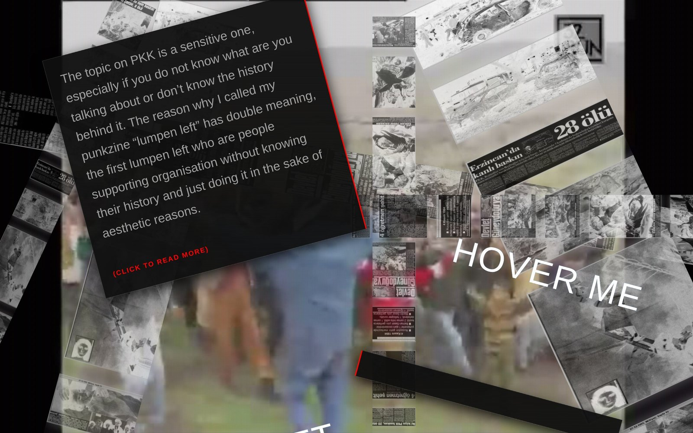
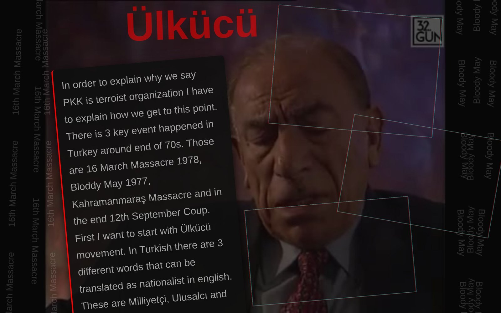
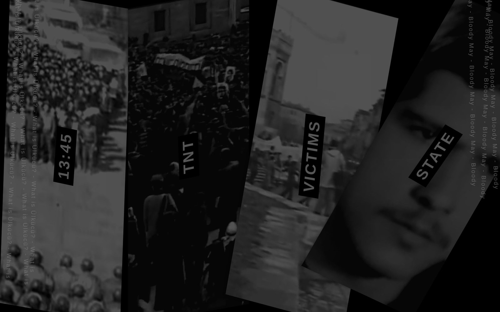
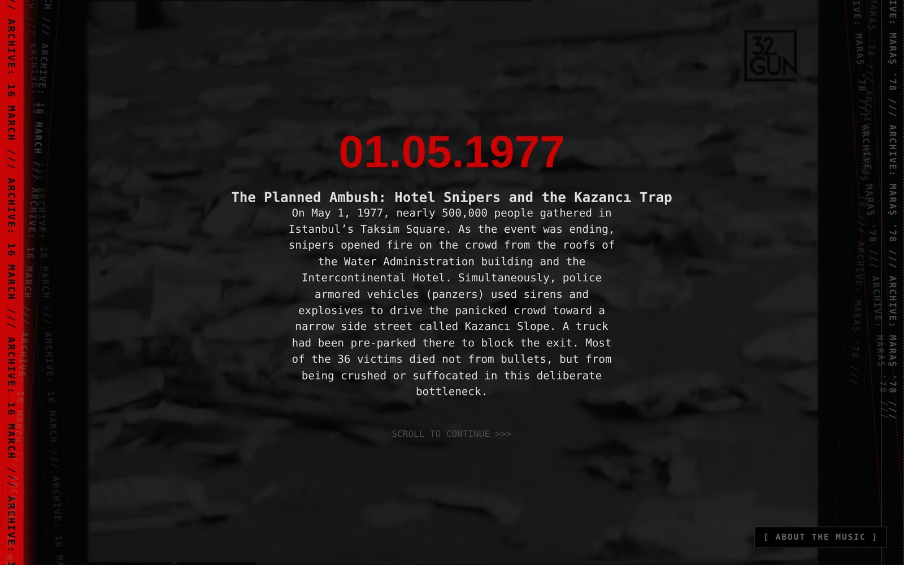
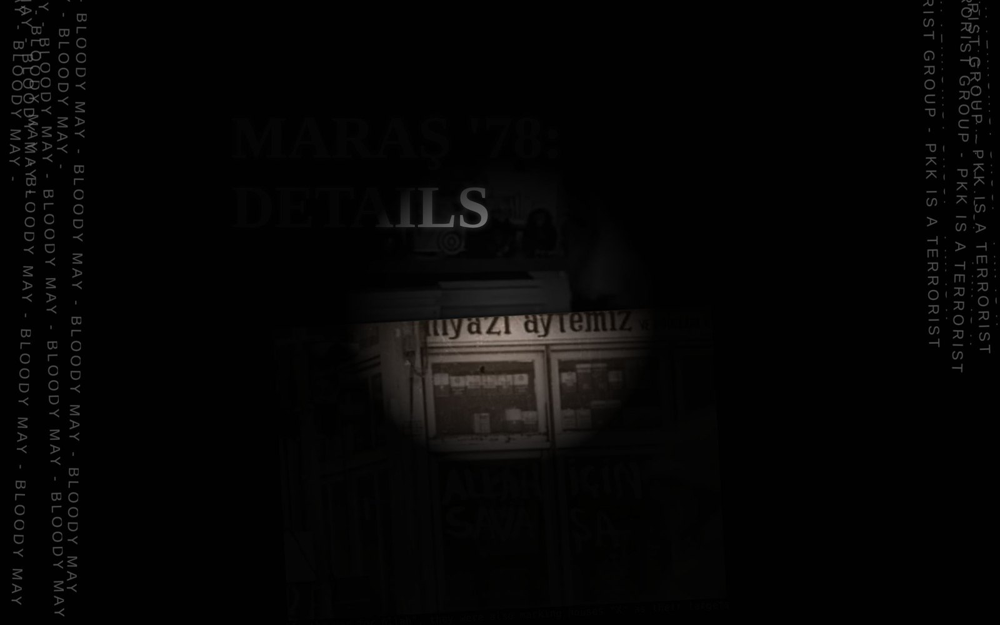
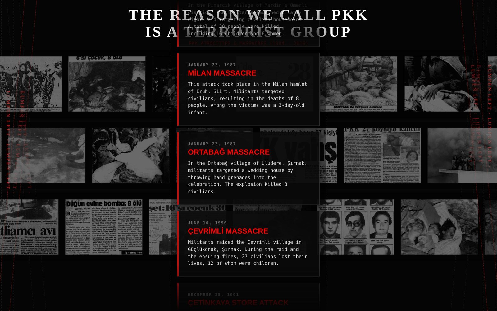

Lumpen Left is a punkzine built as a website. Its title carries a double reading, and both are accusations. The first is aimed at a left that has adopted the iconography of armed organisations as an aesthetic — support without the history behind it, politics turned into hip content, performance in place of reading. The second is aimed at the PKK itself, and disputes the claim that the organisation belongs to any communist, socialist or anarchist lineage.
Rather than argue from the present, the zine works backwards. Six chapters move through the political violence of late-1970s Turkey — the Ülkücü movement and its commando camps, the 16 March 1978 Beyazıt massacre, the Bloody May Day of 1977, and Maraş '78 — before arriving at the archive of attacks that closes the piece. The argument is structural rather than ethnic: that the conditions which produced the organisation are older, and more deliberately manufactured, than the identity framing usually applied to it.
If you keep labeling one ethnicity to one organisation then you can connect germans to nazis, turks to ülkücü group. Therefore be careful with words, they are powerful and destructive.
From the entry chapter
Six Chapters
Each chapter is written and styled on its own terms — a different typographic system, a different reading mechanic, a different way of hiding and releasing the text. Nothing is shared between them except the subject.
Lumpen Left
The entry. Newspaper clippings scroll past in six continuous film strips while the thesis is revealed one click at a time.

Ülkücü
Three Turkish words all translate to "nationalist" in English. The chapter separates them, then follows the commando camps, the MHP, and the NATO stay-behind structure.

16 March: Shattered
Beyazıt Square, 1978. Four panels — 13:45, TNT, Victims, State — each holding muted footage that only comes into colour when you hover it.

Bloody May '77: Blackout
Taksim Square, 1 May 1977. Set as a typewritten case file, scored with a Ruhi Su recording, over footage held at 85% blackout.

Maraş '78: Breaking Point
The massacre that preceded martial law and, twenty months later, the coup. The quietest chapter — background footage sits at 15% opacity.

File: Terror Archive
The closing chapter, and the only one built as a plain index: press clippings of the attacks, laid out as evidence rather than argument.
Making It Read Like Print
The zine is hand-coded — no framework, no build step, no libraries. Text is released by clicking rather than by scrolling, so the reader assembles the argument in the order each page allows; it is a print zine's page-turn logic moved onto the web. Archive footage runs muted and looping behind the type, desaturated by CSS so it reads as texture rather than as video. Glitch effects are built from duplicated pseudo-elements offset against each other, and the scrolling clipping strips are a single CSS animation over a doubled list.
- Format
- Six-chapter web zine, linear but non-linear inside each chapter
- Built with
- Hand-written HTML, CSS and vanilla JavaScript. No framework or build step.
- Typography
- Bebas Neue, Oswald, Courier Prime, Special Elite, Rubik Glitch, Chakra Petch — one system per chapter
- Techniques
- CSS glitch layering, clip-path masking, infinite marquee strips, progressive click-reveal, muted looping video backgrounds, scanline overlays
- Material
- Period press clippings, archive footage and a Ruhi Su recording
- Context
- MediaArchitecture, Bauhaus-Universität Weimar